Deep Guide · GTC Taipei 2026
GTC Taipei 2026 深度導讀：黃仁勳把「AI 工廠」講成了一種國家級生產制度
從 agentic AI、AI factory 到 Physical AI，這場 keynote 的核心不是產品清單，而是 NVIDIA 正在把 AI 定義為可量產、可計價、可擴產的工業制度。
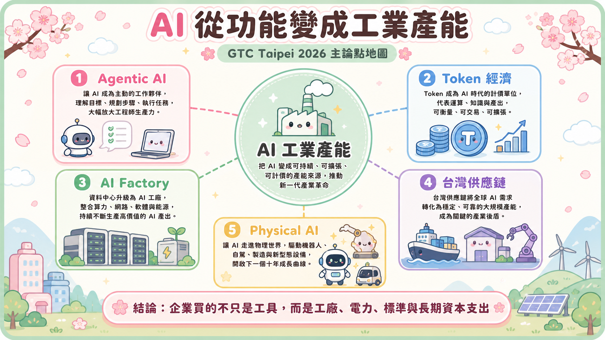
這場 GTC Taipei 2026 keynote，最容易被誤讀成一場產品轟炸。
Vera Rubin、Vera CPU、DSX、NVLink Fusion、RTX Spark、N1X、Cosmos 3、Alpamayo 2、Isaac Groot，一個接一個名字推上舞台。觀眾如果只忙著記規格，就會以為這只是 NVIDIA 又把產品線往外擴了一圈。
但真正的主軸不是「NVIDIA 發表了什麼」，而是黃仁勳在台北重新定義了一件事：AI 已經不是軟體功能，而是一種新的工業產能。
這句話的重量很大。因為只要 AI 是功能，企業買的是工具；只要 AI 是產能，企業買的就是工廠、電力、供應鏈、標準、作業系統與長期資本支出。這場 keynote 的所有段落，從 GitHub commit 到 Vera CPU，從 DSX 到 Physical AI，全部都在把世界推向第二種理解。
台北不是偶然的舞台。這裡是台灣供應鏈的中心，也是 NVIDIA 把 AI 需求變成 AI 產能的關鍵現場。黃仁勳這次不是來感謝代工夥伴而已，他是在對台灣說：你們不只是幫我們做晶片，你們正在幫世界建立下一個工業時代的生產基礎。
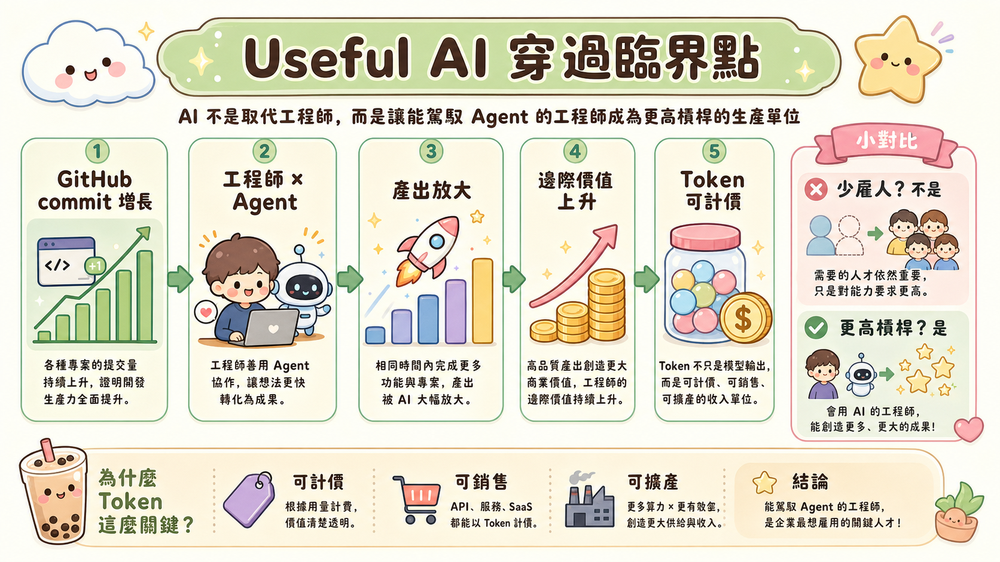
第 01 章
他先讓聽眾相信：Useful AI 已經穿過臨界點
整場演講的第一個槓桿，是軟體工程師。
黃仁勳用 GitHub commit 的成長說明，2026 年的軟體產出正在被 agentic AI 放大。這不是「AI 寫一點 code」的故事，而是生產函數的改變。當一個工程師能用 AI 產出三倍工作，企業的反應不會是少雇人，而是更想雇用能駕馭 AI 的人。
這裡有一個很符合他長期語言習慣的轉折：他不從「AI 會不會取代人」這種恐懼出發，而是把問題翻成第一性原理。
如果一個人的產出變成三倍，那這個人對企業的邊際價值是下降，還是上升？
答案很清楚。上升。
所以他要說的不是「工程師安全了」，而是「會用 agent 的工程師變成更高槓桿的生產單位」。這是一種典型的黃仁勳式重框架：把社會焦慮改寫成產能公式，把工作恐懼改寫成 GDP 問題。
這也讓後面的 token 論述成立。只要 AI 真的能完成有價值的工作，token 就不再只是模型輸出的技術單位，而是可計價、可銷售、可擴產的收入單位。
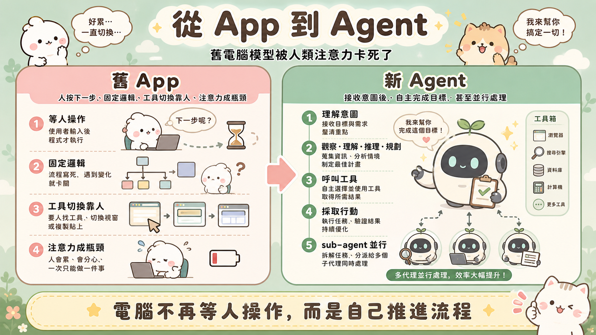
第 02 章
從 App 到 agent：舊電腦模型被人類注意力卡死了
過去幾十年的電腦很像倉庫。人進去找工具、搬資料、按按鈕、跑流程，電腦等人指揮。
黃仁勳這次要宣告的是：這種模型已經不夠了。
舊 app 的工作方式是固定邏輯。使用者輸入，程式執行，輸出結果。真正的瓶頸不是 CPU 或 GPU，而是人。人要決定下一步，要在不同工具之間切換，要等待結果，要把上下文搬來搬去。人的注意力成了整條數位生產線的節拍器。
Agentic AI 的本質，是把這個節拍器換掉。
agent 接收意圖後，能觀察、理解、推理、規劃、使用工具、採取行動。它可以叫用資料庫、瀏覽器、試算表、程式庫，也可以把任務拆給 sub-agent。這不是更聰明的 app，而是一種新型工作單元。
這裡的深層變化是：電腦不再等待人按下一步。電腦開始根據人的意圖自己推進流程。
但一旦電腦變成這樣，底層硬體就不能沿用舊假設。人類使用者可以忍受延遲，agent 不行。人類一天操作有限次工具，agent 可能在一次任務裡呼叫工具上百次。人類會休息，agent 不會。
因此，agent 不是軟體層的新功能，而是一個會把整個計算堆疊壓出新瓶頸的新使用者。
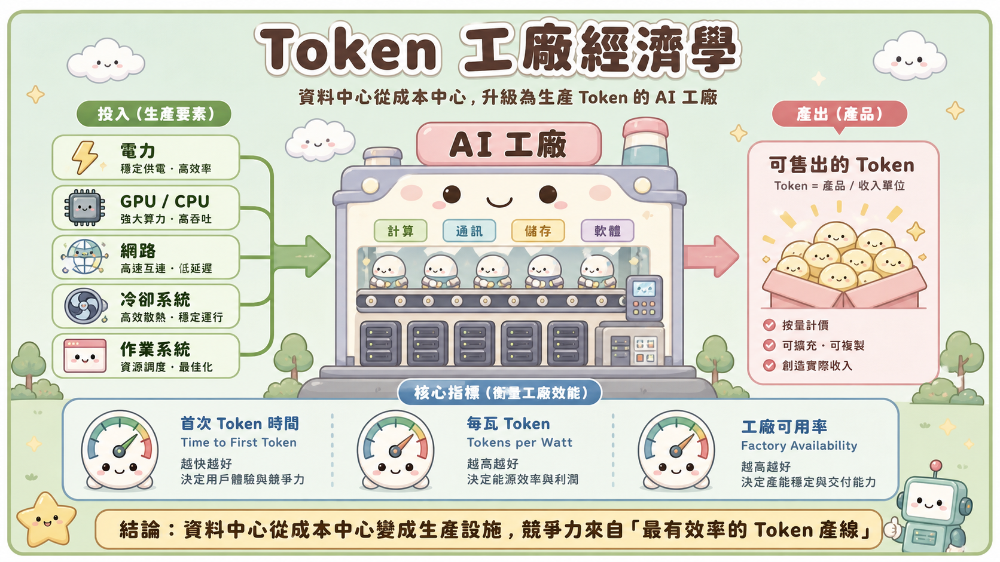
第 03 章
token 變成產品：資料中心因此變成 AI factory
這場 keynote 最關鍵的一步，是把 token 從成本語言轉成收入語言。
在傳統資料中心裡，算力是成本。企業談的是每核心租金、每小時費率、每次查詢成本。資料中心像 IT 部門的基礎設施，重點是穩定、便宜、可用。
到了 AI factory，邏輯倒過來。
如果 agent 能替客戶完成工作，token 就是產品。如果 token 是產品，資料中心就不是成本中心，而是工廠。GPU、CPU、網路、冷卻、電力、儲存、作業系統，都成為生產 token 的機器與產線。
這就是黃仁勳多年來「電腦從倉庫變工廠」語言的 2026 版本。
工廠的核心不是擁有機器，而是穩定產出。AI factory 的核心也不是買到最多 GPU，而是用有限電力、有限空間、有限冷卻能力，產出最多、最快、最低成本的 token。
這讓三個指標變成財務指標：
- time to first token：多快開始產生可售出的結果；
- tokens per watt：每瓦電能產出多少收入；
- factory availability：整座工廠能不能長期穩定運轉。
這也是為什麼 keynote 一直把技術規格和商業價值混在一起講。對黃仁勳來說，這兩件事已經不能分開。延遲不是單純工程問題，延遲會影響收入；電力不是後勤問題，電力會影響毛利；冷卻不是設備問題，冷卻會影響可售 token 的總量。
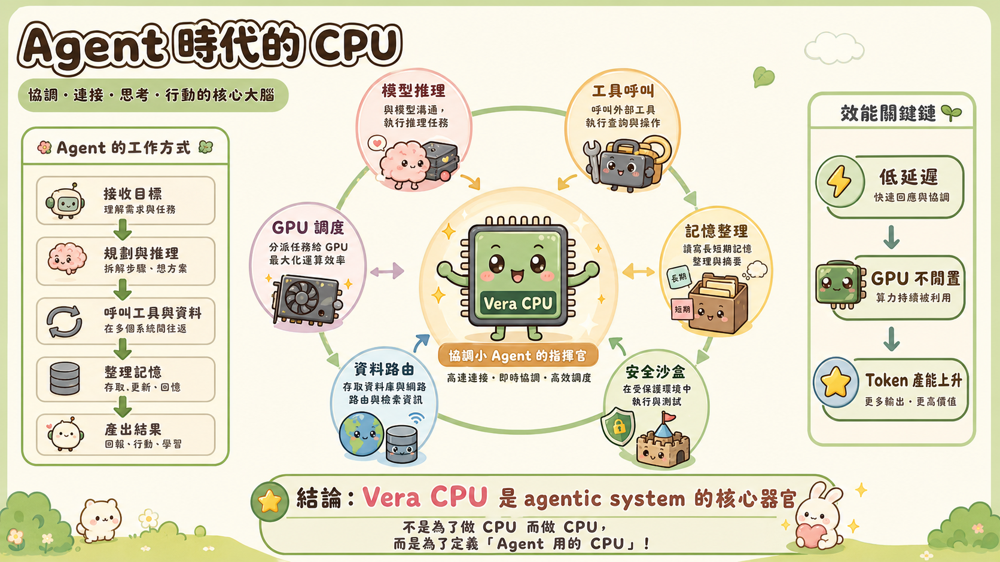
第 04 章
Vera CPU：黃仁勳不是補 CPU 缺口，而是在定義 agent 時代的 CPU
外界談 NVIDIA，最習慣的敘事是 GPU。但 GTC Taipei 2026 的一個重要反直覺點，是 CPU 被拉回舞台中央。
這不是因為 GPU 不重要，而是 agentic workload 讓 CPU 重新變成瓶頸。
一個 agent 不是單純跑一次模型。它會不斷在模型、工具、記憶、安全沙盒、資料庫、網路與 GPU 之間往返。每一次工具呼叫、每一次上下文整理、每一次資料路由，背後都有 CPU 與系統軟體的負擔。
傳統 CPU 是為人類 app 時代設計的。人類點一下、等一下、看一下，系統有很多鬆弛空間。agent 不一樣。agent 的工作節奏接近機器對機器，等待就是浪費，延遲就是 GPU 閒置，GPU 閒置就是 token 產能下降。
所以 Vera CPU 的真正定位不是「NVIDIA 也做 CPU」，而是「NVIDIA 要定義 agent 用的 CPU」。
這件事非常符合黃仁勳的決策慣性。他很少滿足於在既有賽道裡做增量改良。當他看到一個新工作負載會改寫整個市場，就會從底層重新命名那個市場。1999 年他命名 GPU；2006 年他把 GPU 變成 CUDA 平台；2026 年，他把 CPU 重新命名為 agentic system 的核心器官之一。
Vera CPU 因此不只是產品，而是一個論點：未來的使用者不只是一個人，而可能是數十億個 agent。若 agent 數量遠超人類，agent CPU 的市場自然可能比傳統 CPU 更大。
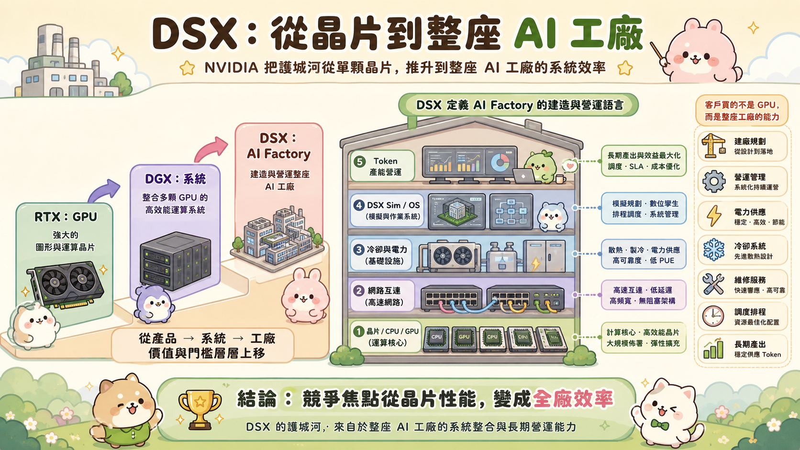
第 05 章
DSX：NVIDIA 把護城河從晶片推到整座工廠
RTX 是 GPU。DGX 是系統。DSX 是 AI factory。
這三個名字的遞進，幾乎就是 NVIDIA 商業邊界的擴張史。
如果客戶只買 GPU，競爭焦點是晶片性能。如果客戶買 DGX，競爭焦點變成系統整合。如果客戶買 DSX，競爭焦點就變成建廠、營運、電力、冷卻、維修、調度與長期產出。
這是一個更大的護城河。
DSX Sim 讓工廠在實體建設前先被模擬。DSX OS 管理工廠上線後的運作。DSX Max LPS、DSX Flex 把電力、負載與電網協調納入系統。這些名稱背後的本質，是 NVIDIA 不想只把硬體交出去，而是想把 AI factory 的操作語言也定義下來。
這裡可以看見黃仁勳非常典型的「對光速比較」思維。當你把 AI factory 視為產線，就會問：真正的物理限制在哪裡？是機櫃空間？電力供應？液冷效率？網路延遲？GPU 閒置？維修時間？首次 token 延遲？
一旦問題被這樣拆開，答案就不可能只是「買更快的晶片」。答案必然是從晶片、CPU、NVLink、Spectrum-X、BlueField、液冷、Omniverse、OS 到 agent runtime 的系統級重構。
這就是 NVIDIA 從 GPU 公司變成 AI 基礎設施公司的實際路徑。
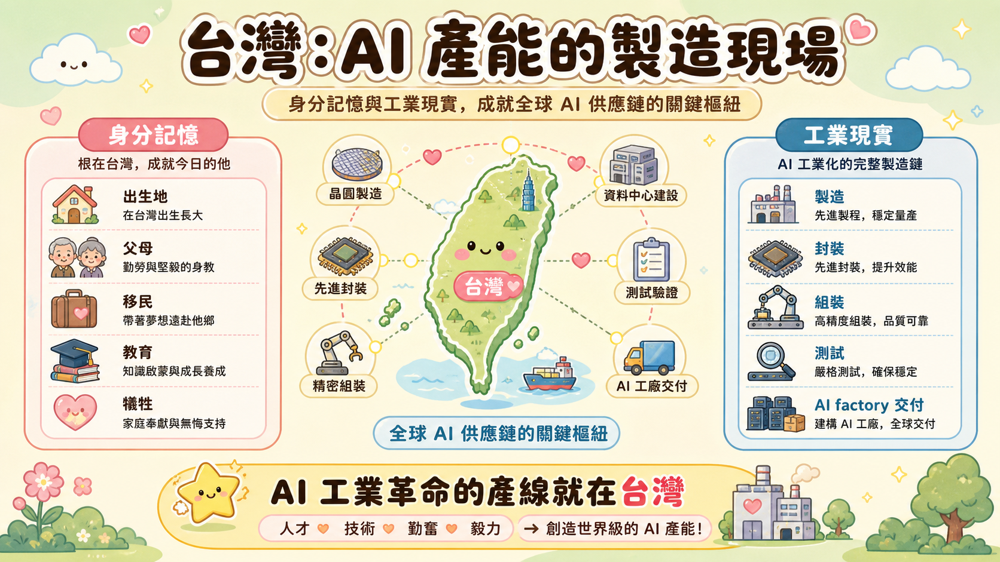
第 06 章
台灣段落的真正意義：情感是真，產業訊號也是真
黃仁勳談台灣時常常有情感層次，這場 keynote 也一樣。但這裡不能只看成鄉情。
在他的語言裡，台灣有兩個角色同時存在。
第一個是身分記憶。台灣是他的出生地，是父母、移民、教育、犧牲與早年生命故事的一部分。這會讓他在台灣舞台上的語氣自然變柔，會把「we did this with Taiwan」說得像感謝，也像共同完成一件人生工作。
第二個是工業現實。Vera Rubin 的量產、封裝、組裝、測試與 AI factory 供應鏈，都高度依賴台灣。當 AI factory 從單台伺服器變成一整座工業系統，台灣供應鏈的角色就不只是代工，而是全球 AI 產能的建造者。
這兩個層次疊在一起，讓台北場的語氣特別不一樣。它既有傳道者的情緒，又有工程師的精確：感謝台灣，是情感；點名 TSMC、Foxconn、Quanta、MediaTek 等供應鏈，是產業配置；把台灣 GDP、供應鏈忙碌與 AI factory 需求連起來，是對台灣科技業的公開動員。
黃仁勳不是只說「謝謝台灣」。他其實在說：AI 工業革命不是只在矽谷發生，它的產線就在台灣。
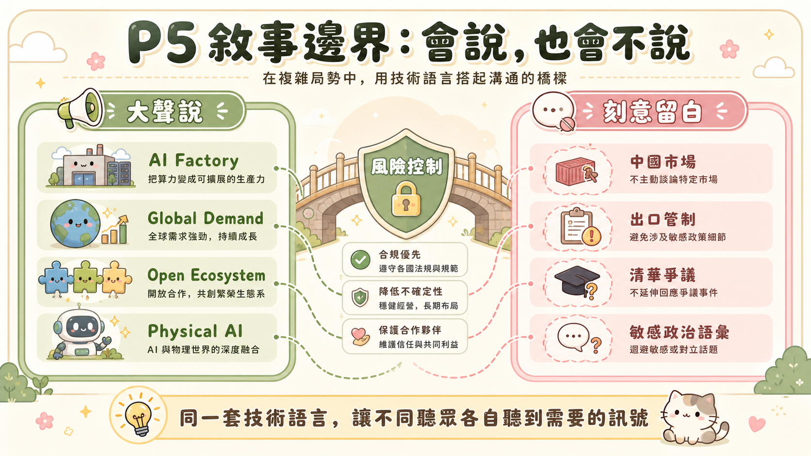
第 07 章
沉默的段落：P5 時代的法務邊界在台上留下痕跡
這場 keynote 很會說，但更值得注意的是它很會不說。
在 2026 這個時間點，NVIDIA 面對的不是單純的技術競爭，而是 AI 工廠、出口管制、地緣政治、清華顧問委員會爭議、中國市場與美國政策壓力同時存在的局面。這是一個「帝國維護」與「政治地雷」並存的階段。
所以台北場幾乎完全避開中國市場、出口管制、清華爭議與敏感政治語彙，並不是內容缺漏，而是敘事邊界。
黃仁勳在技術議題上可以非常直接，甚至會用短句把整個產業推到牆角。但在地緣政治議題上，他通常會切換成謹慎、模糊、可被多方解讀的語言。這場 keynote 乾脆把敏感語彙降到最低，用 AI factory、global demand、open ecosystem、physical AI 這些普世技術語言取代政治表態。
這是一種成熟的風險控制。
對台灣，他要表達深度綁定；對美國，他要表達 AI 是 GDP 與工業競爭力；對全球企業，他要表達不投資 AI factory 就會落後；對不能直接點名的市場，他保留的是開放標準與生態入口。
同一句技術語言，讓不同聽眾各自聽到需要的訊號。這是整場 keynote 最精細的地方。
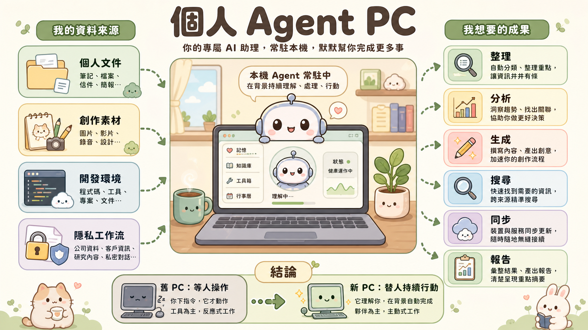
第 08 章
RTX Spark：PC 不是終端，而會變成個人 agent 的駐地
資料中心之外，RTX Spark 和 N1X 把 keynote 帶回個人電腦。
這段看似比較消費級，其實延續同一個邏輯：agentic computing 不只會在雲端發生，也會在個人本機發生。
如果未來每個人都有長期陪伴、理解資料、接管工作流程的 agent，那它不能永遠只住在雲端。個人文件、創作素材、開發環境、公司資料、隱私內容，都需要一部分本機算力來承接。
這讓 PC 產業出現一次新的架構機會。
過去 PC 是人操作軟體的設備；未來 PC 可能是個人 agent 的常駐工作站。人不一定時時坐在螢幕前，但 agent 可以在背景整理、分析、生成、搜尋、同步、嘗試、報告。
黃仁勳把這件事講成電腦重新發明，並不是誇張。真正的改變不在外型，而在主體性：舊 PC 等待使用者；新 PC 可能替使用者持續行動。
RTX Spark 的戰略位置，就是把 AI factory 的 agentic pattern 縮小到桌面與筆電，讓個人端也進入 NVIDIA 的 CUDA 與 agent 工具鏈。
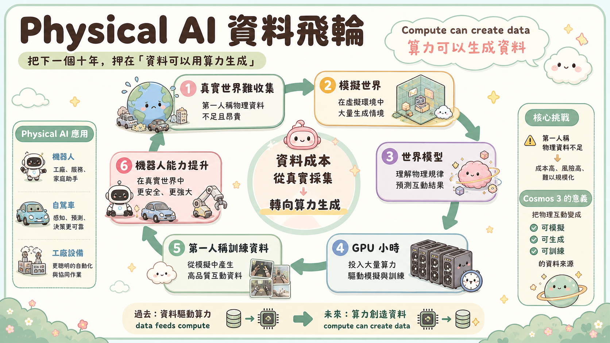
第 09 章
Physical AI：他把下一個十年押在「資料可以用算力生成」
演講後段轉向 Physical AI，這不是換題，而是把 agent 從數位世界推進物理世界。
黃仁勳說 agentic AI 就像 digital robot。這句話很關鍵。因為一旦你接受 agent 是數位機器人，就會自然理解下一步：讓機器人進入真實世界。
但物理世界有一個比語言模型更難的問題：資料。
語言模型可以吃網路文字、程式碼、圖片與影片。機器人不行。機器人需要從自己的視角理解世界：看到障礙、抓取物體、轉彎、跌倒、碰撞、避讓、搬運、操作工具。旁觀者拍攝的影片不等於機器人可用的第一人稱行動資料。
這就是 Cosmos 3 的重要性。
Cosmos 3 不是單純做出漂亮影片，而是把物理互動變成可模擬、可生成、可訓練的資料來源。當機器人缺資料，不一定只能派更多真實機器人去真實世界跑更多小時；也可以用算力生成物理合理的場景，讓模型先在模擬中學習。
這裡出現了整場最深的轉換：過去是 data feeds compute，未來在 Physical AI 裡，compute can create data。
這句話會重塑機器人產業的成本結構。誰擁有更多算力、模擬平台、世界模型與部署工具，誰就能更快產生機器人訓練資料。這正是 NVIDIA 想把 Omniverse、Cosmos、Isaac Lab、Isaac Groot、Alpamayo 2 串在一起的原因。
它不是只在做機器人，而是在做機器人產業的資料飛輪。
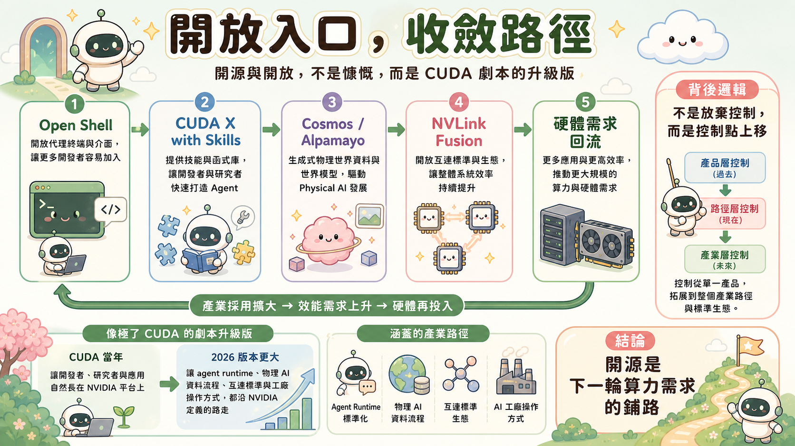
第 10 章
開源與開放：這不是慷慨，是 CUDA 劇本的升級版
這場 keynote 出現多個開放訊號：Open Shell、Cosmos 3、Alpamayo 2、NVLink Fusion。表面上，這像是把技術交給生態系。深一層看，這是 NVIDIA 最熟悉的長期打法。
CUDA 當年不是靠收軟體授權費建立護城河，而是靠讓開發者、研究者與應用自然長在 NVIDIA 平台上。等到深度學習爆發，整個世界已經被 CUDA 預先鋪好路。
2026 年的版本更大，也更積極。
Open Shell 讓企業 agent 有共同執行環境。CUDA X with Skills 讓 agent 能讀懂並使用 NVIDIA 的工具庫。Cosmos 3 和 Alpamayo 2 把 physical AI 的起點開出去。NVLink Fusion 則讓第三方 ASIC 進入 NVIDIA 的互連標準，而不是在外面自建孤島。
這不是放棄控制。這是把控制點上移。
只要產業採用 NVIDIA 定義的 agent runtime、物理 AI 資料流程、互連標準與工廠操作方式，未來的硬體、算力、網路與系統需求就會回流到 NVIDIA。開放的是入口，收斂的是路徑。
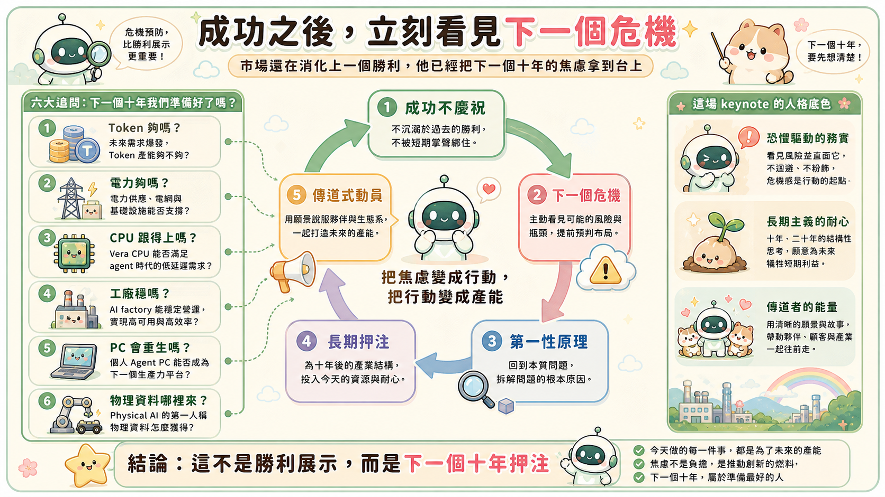
第 11 章
這場 keynote 的人格底色：恐懼、長期主義與傳道者能量
如果把這場 keynote 放回黃仁勳的長期人格脈絡，它其實不是一次勝利展示，而是一次危機預防。
外界看到的是 NVIDIA 站在高點，市值、訂單、供應鏈、AI 熱潮全部在它這邊。但黃仁勳的語言從來不是真的在慶祝。他的敘事習慣是：成功只是一個更大危機到來前的短暫窗口。
所以他不會停在 Blackwell 成功，也不會只講 Vera Rubin 量產。他立刻把聽眾推到下一個問題：
- token 產能夠不夠？
- 電力夠不夠？
- CPU 跟得上 agent 嗎？
- AI factory 能不能穩定營運？
- PC 會不會被重新發明？
- 物理世界的資料怎麼來？
- 如果機器人是下一波，誰先建立平台？
這是典型的長期主義者語氣：當市場還在消化上一個勝利，他已經把下一個十年的焦慮拿到台上。
同時，他仍然保留傳道者節奏。短句、排比、工廠比喻、台灣感謝、共同完成的「we」，都在把技術規格變成集體使命。這是他最強的舞台能力：讓供應鏈覺得自己不是在接訂單，而是在參與歷史。
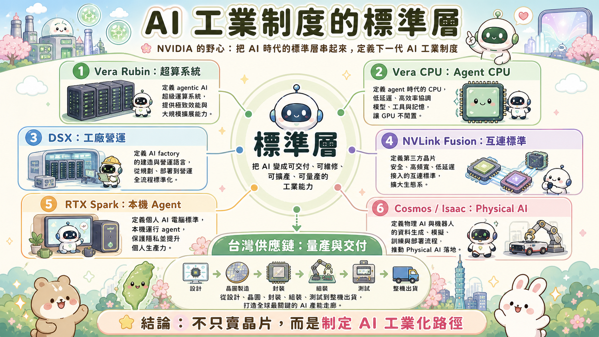
第 12 章
真正的結論：NVIDIA 想成為下一代 AI 工業制度的標準層
這場 keynote 的真正結論不是「NVIDIA 還會成長」，而是「NVIDIA 正在嘗試把 AI 時代的標準層全部串起來」。
Vera Rubin 定義 agentic AI 的超算系統。Vera CPU 定義 agent 時代的 CPU。DSX 定義 AI factory 的建造與營運。NVLink Fusion 定義第三方晶片如何接入。RTX Spark 定義本機 agent 電腦。Cosmos 3 與 Isaac Groot 定義物理 AI 與機器人的訓練部署流程。
把這些放在一起，NVIDIA 的野心就很清楚：不只賣晶片，不只賣系統，而是成為 AI 工業化時代的標準制定者。
這也是台北場的深層意義。AI 模型可以在美國實驗室被發明，資本支出可以由全球雲端公司啟動，但真正把它變成可交付、可維修、可擴產、可量產的工業能力，必須經過台灣供應鏈。
所以這場 keynote 對台灣說的，其實不是「謝謝你們幫 NVIDIA」。它說的是：下一個 AI 工業制度，需要台灣一起製造。
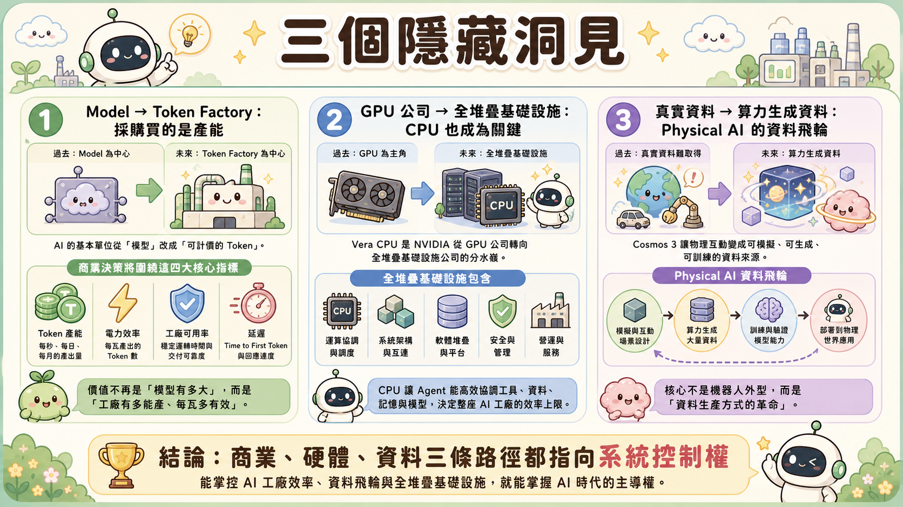
第 13 章
三個隱藏洞見
第一，這場 keynote 把 AI 的基本單位從 model 改成 token factory。
模型仍然重要，但商業決策會越來越圍繞 token 產能、電力效率、工廠可用率與延遲。這會把採購邏輯從「買最強 GPU」推向「買整座最會賺錢的 AI 工廠」。
第二，Vera CPU 是 NVIDIA 從 GPU 公司轉向全堆疊基礎設施公司的分水嶺。
CPU 在 agentic workload 裡重新變成關鍵瓶頸。NVIDIA 用 Vera CPU 不是補產品線，而是在宣告 agent 時代的 CPU 也要由它定義。
第三，Physical AI 的核心不是機器人外型，而是資料生產方式。
Cosmos 3 的意義在於讓物理資料可以被計算生成。當資料成本從真實世界收集轉向 GPU 小時，NVIDIA 的算力優勢就會延伸到機器人產業的最底層。
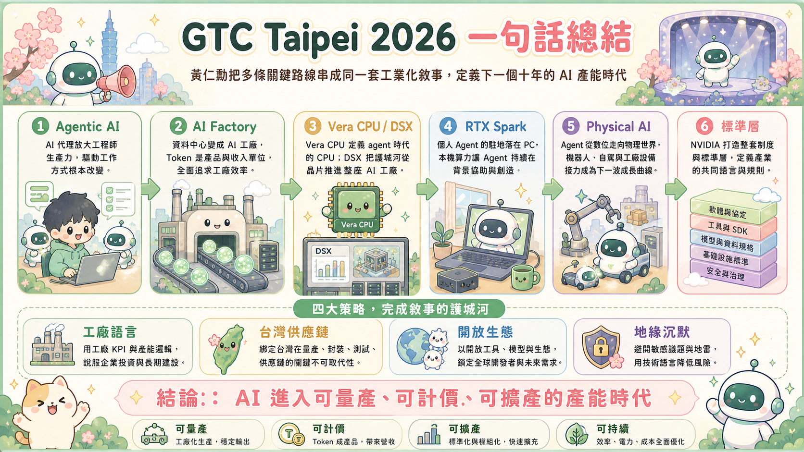
第 14 章
TL;DR
GTC Taipei 2026 不是一場普通產品發表，而是黃仁勳把 agentic AI、AI factory、Vera CPU、DSX、RTX Spark 與 Physical AI 串成同一套工業化敘事：AI 已經從模型展示進入可量產、可計價、可擴產的產能時代。
參照黃仁勳的長期人格與決策慣性，這場演講不是勝利慶祝，而是下一個十年押注的公開動員：用工廠語言說服企業投資，用台灣語言綁定供應鏈，用開放生態鎖定未來需求，用沉默避開地緣政治地雷。
它刻意不說中國與出口管制，卻把所有能說的部分推到最大聲：AI 工業革命需要新的 CPU、新的工廠、新的電力管理、新的個人電腦、新的機器人資料飛輪，而 NVIDIA 要做這整套制度的標準層。